Télécharger et ouvrir le fichier de données du cours.
data <- read.csv2("data/potentiel-fiscal-resultat-gc.csv")
maData <- data [data$Département == '93',]exemples
variable,
observation,
valeur
A vous !
On retiendra pour le moment uniquement les termes : individu / population / variable et modalité
Individu -> Modalité
Modalité -> Individus
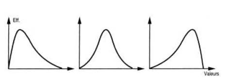
discrétisation la plus rudimentaire
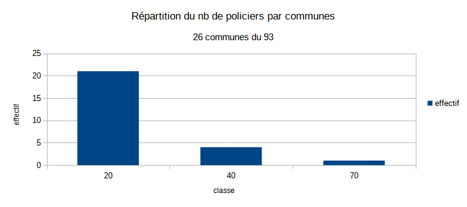
Et non pas :
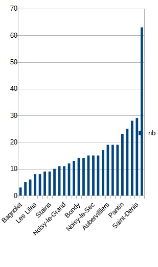
Pour obtenir un TIG avec une seule variable, quelle variable choisir et pour quels individus ?
Dans l’exemple proposé du cours (Potentiel fiscal et police municipale), on choisit la colonne de la dénomination des communes (26 communes sur le 93) et le nombre d’agents
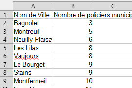
Cet exercice permet d’utiliser dans le tableur :
utilisation de la barre de formule
formule simple : minimum et maximum
formule frequence, formule matricielle (CTRL + MAJ + ENTREE)
le graphique en barre et la personnalisation (transformation données étiquettes)
Pour mémoire, formules du tableau
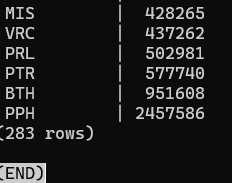
## Min. 1st Qu. Median Mean 3rd Qu. Max.
## 3.00 9.25 14.00 16.15 19.00 63.00Concernant notre exemple, il y a une grande disparité entre les communes, certaines ont 3 agents, d’autres 63.
L’énorme majorité des communes ont moins de 20 agents. Une seule commune possède plus de 60 agents, il s’agit d’Aulnay sous Bois. Son maire étant un ancien lieutenant de la police nationale.
graphique en barres, lignes (lissage)
Observer la disposition des bornes : elles sont utilisées comme des étiquettes et non pas comme une série de valeurs.
Sous R, l’histogramme est un des graphiques le plus simple à obtenir.
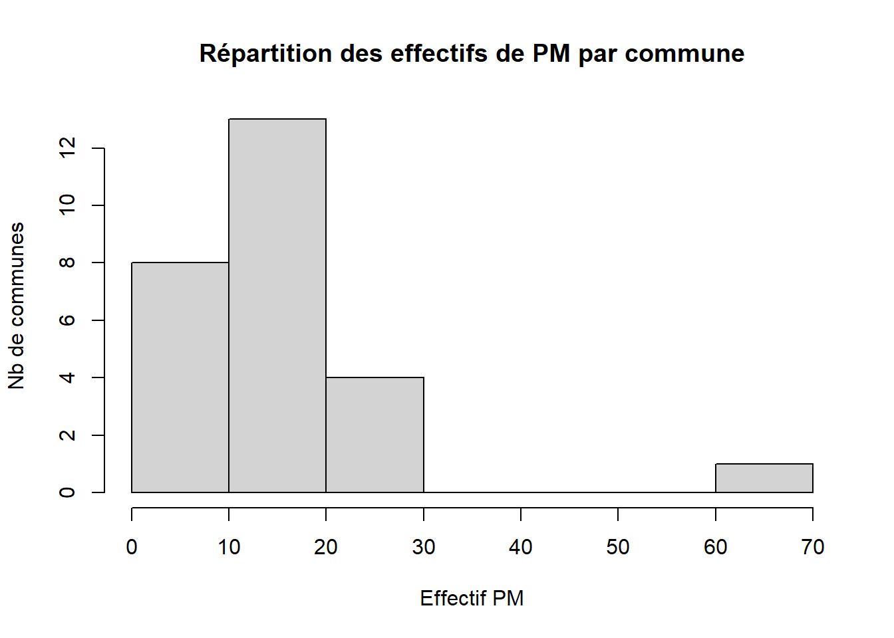
L’histogramme souligne l’originalité d’Aulnay sous bois par rapport autres communes.
Des retours très nombreux (46 sur 60). Beaucoup d’étudiants ont buté sur la difficulté de la numérotation décimale et ont utilisé le fichier vu en classe, pas de problème dans le cadre d’un exercice.
Sous Calc, l’astuce consiste à modifier les paramètres linguistiques.
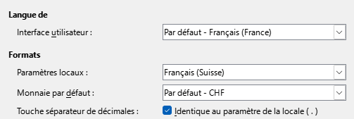
Pour un tableur, le chiffre se positionne à droite de la cellule, le texte à gauche.
L’autre solution était d’utiliser le format excel.
Attention à toujours définir sa donnée dés le départ y compris sa source.
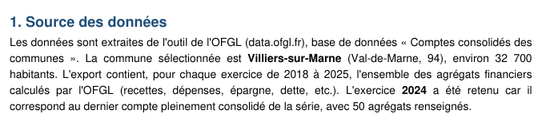
Dans le cadre de notre cours, c’est la commune et son département (ou sa communauté de communes) puis l’agrégat choisi.Ne jamais mettre un tableau de données dans sa copie !
Ne jamais prendre en photo son écran !
Le mieux traitement de texte dans lequel on insère un graphique image (copie d’écran CTRL + MAJ + S puis CTRL + V pour coller), puis enregistrement en .pdf au final.
Attention aux nombreuses pages inutiles si on passe directement du tableur au traitement de texte.
Soigner ses titres
Par contre, pas de carte, ce n’est pas le sujet du cours. La discrétisation avec un logiciel SIG est souvent automatisée, et ce cours permet de faire les choses à la main.
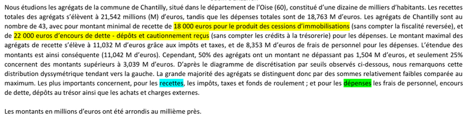
même si, un strict respect de la consigne donnait :
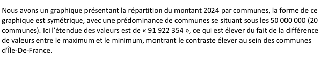
Prochain exercice, commentaire plus court. 2 phrases maximum, 1 page au total, aller à l’essentiel.
Il y plus de grosses dépenses en fonctionnement que de petites (ou l’inverse)
Ou plus osé :
Certaines villes ne maîtrisent pas leurs dépenses de personnel
Et préciser quelle ville est remarquable et pourquoi ?
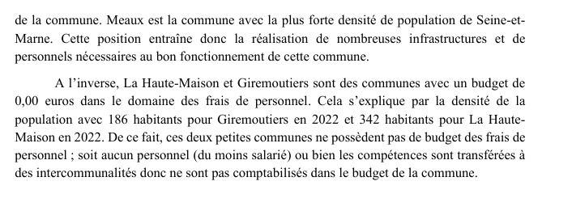
Revenir sur le terme : formule fréquence et son graphique
Diagramme de fréquence, histogramme…
Le mieux : Discrétisation des dépenses de personnel en fonction des villes
Il faut afficher les bornes.
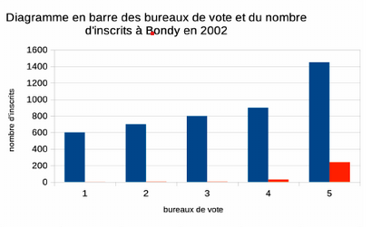
Bug repéré sous Libre Office
Une solution, afficher les étiquettes sur les barres
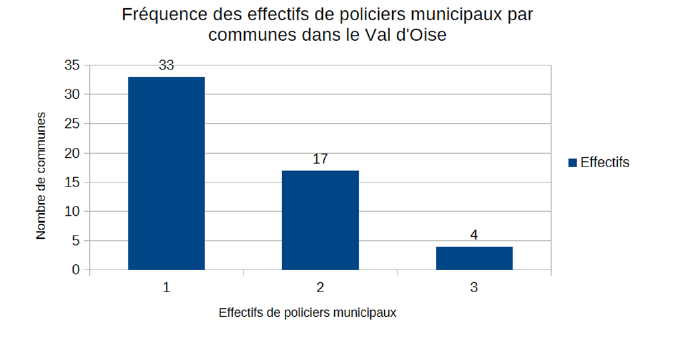
Une méthode différente est valide également (le tableau croisé dynamique)
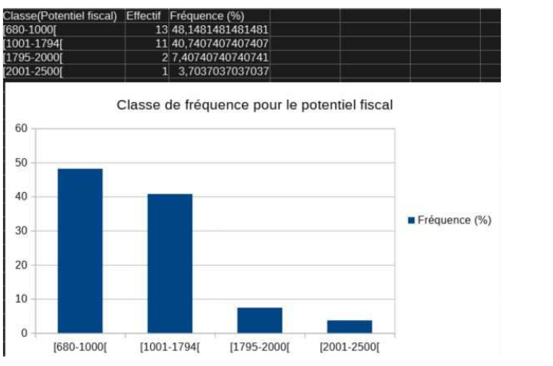
Nous avons déjà vu l’amplitude à travers minimum et maximum. Il y en a d’autres. Ils servent à résumer la série statistique
Nous allons montrer comment calculer médiane, moyenne et écart type dans le tableur.
Pour l’exemple, on prend l’agrégat financier de l’exercice : celui des frais du personnel.
Afin de pouvoir comparer les communes de taille différente, on utilise plutôt les montants par habitant.
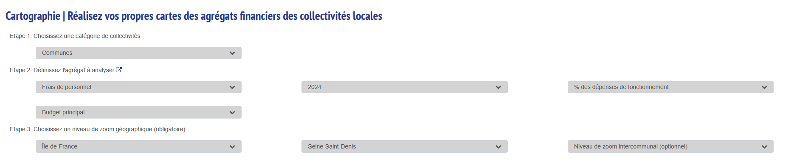
## 'data.frame': 40 obs. of 2 variables:
## $ Nom : chr "Dugny" "Pantin" "Coubron" "Villemomble" ...
## $ montant.par.hbt: num 1308 1133 737 832 459 ...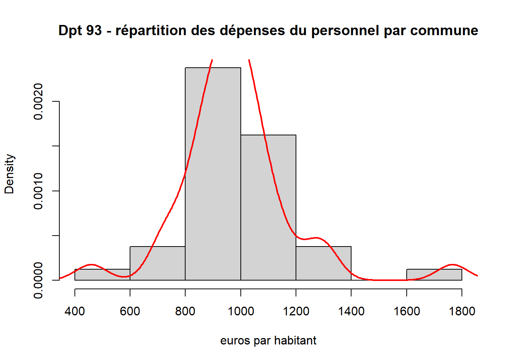
Il s’agit de caractériser une distribution par son centre.
Le calcul de la moyenne est connu. Celui de la médiane beaucoup moins.
Sur le tableau complet, créer une colonne rang. Et relever le rang médian
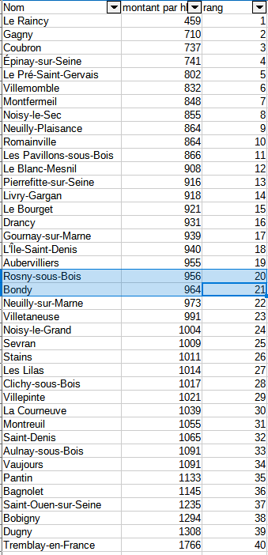
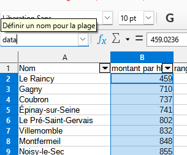
### Représentation graphiqueElle consiste à tracer moyenne et médiane sur le graphique, elle n’est pas possible sous le tableur.
moy <- mean(data$montant.par.hbt)
med <- median(data$montant.par.hbt)
hist(data$montant.par.hbt, main = "Distribution des dépenses de personnel par hbt")
abline(v = moy, col = 'blue')
abline(v = med, col = 'red')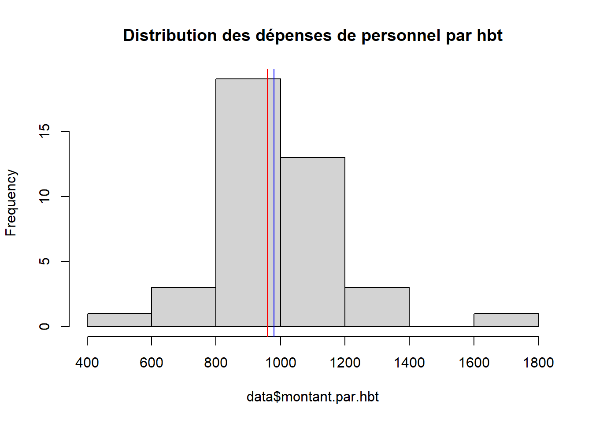
Pour la variable dépense de personnel, quelle est l’indicateur le plus utile ?
Il s’agit d’une propriété mathématique de la médiane. Si la distribution est disymétrique, cette valeur est le vrai centre de la distribution.
Que peut-on dire de la forme de la distribution
si la moyenne est égale à la médiane ?
si moyenne > médiane
si médiane > moyenne
Démonstration avec les agrégats du 93
## [1] "Libellé.Budget" "Agrégat"
## [3] "Montant.en...par.habitant"##
## AUBERVILLIERS
## 82
## AULNAY-SOUS-BOIS
## 83
## BA des COM - RESTAURATION COLLECTIVE
## 41
## BAGNOLET
## 83
## BLANC-MESNIL (LE )
## 82
## BOBIGNY
## 82
## BONDY
## 82
## CAMPING CORSE
## 65
## CENTRE COMMERCIAL LES GENETTES CLICHY
## 60
## CENTRE EQUESTRE
## 65
## CENTRE MUNICIPAL DE SANTE
## 67
## CINEMA LE BIJOU
## 65
## CITE ARTISANALE AVENUE RAYMOND POINCARE
## 70
## CLIC GAGNY
## 67
## CLICHY-SOUS-BOIS
## 83
## COUBRON
## 81
## COURNEUVE (LA )
## 82
## CSAPA-AUTRES-VILLE DE BLANC-MESNIL (LE )
## 60
## CSAPA-AUTRES-VILLE DE SAINT-OUEN
## 70
## CSAPA-AUTRES-VILLE LE BLANC-MESNIL
## 7
## Cycle Terre
## 7
## DEUX PIECES CUISINE
## 65
## DRANCY
## 82
## DUGNY
## 81
## ENERGIE PHOTOVOLTAIQUE
## 65
## EPINAY-SUR-SEINE
## 82
## FOYER RESIDENCE J LEBAS LIVRY-GARGAN
## 71
## GAGNY
## 82
## GOURNAY-SUR-MARNE
## 82
## HABITAT INDIGNE DES QUATRE CHEMINS
## 69
## ILE-SAINT-DENIS (L' )
## 79
## LE BOURGET
## 82
## LILAS (LES)
## 82
## LIVRY-GARGAN
## 82
## MARCHES COMMUNAUX
## 8
## MONTFERMEIL
## 82
## MONTREUIL
## 82
## NEUILLY-PLAISANCE
## 82
## NEUILLY-SUR-MARNE
## 81
## NOISY-LE-GRAND
## 83
## NOISY-LE-SEC
## 82
## OFFICE DE TOURISME DE BOBIGNY
## 62
## PANTIN
## 82
## PARKINGS PUBLICS
## 67
## PAVILLONS-SOUS-BOIS (LES)
## 82
## PEPINIERE D'ENTREPRISES
## 61
## PIERREFITTE-SUR-SEINE
## 82
## PORT DE PLAISANCE NEUILLY-SUR-MARNE
## 65
## PRE-SAINT-GERVAIS (LE )
## 82
## RAINCY (LE )
## 81
## REGIE DE STATIONNEMENT
## 67
## REGIE INTERESSEE SAINT-PAIR
## 65
## RESEAU DE CHALEUR DE LA ZAC CANAL
## 59
## RESIDENCE AUTONOMIE LES CEDRES
## 7
## RESIDENCE AUTONOMIE LES TAMARIS
## 7
## RESTAURATION DES MANIFESTATIONS MUNICIPA
## 65
## ROMAINVILLE
## 82
## ROSNY-SOUS-BOIS
## 82
## SAINT-DENIS
## 82
## SAINT-OUEN
## 73
## SAINT-OUEN-SUR-SEINE
## 9
## SAINT-OUEN-SUR-SEINE - FOURNITURES REPAS
## 7
## SAINT-OUEN - FOURNITURES REPAS
## 60
## SEVRAN
## 82
## SSIAD-PA-AH-VILLE LE BLANC-MESNIL
## 7
## SSIAD-PA/AH-VILLE DE BLANC-MESNIL (LE )
## 60
## SSIAD SAINT-OUEN
## 60
## SSID-PA-VILLE DE LIVRY-GARGAN
## 60
## SSIDPA-PA-VILLE DE AUBERVILLIERS
## 26
## STAINS
## 82
## TREMBLAY-EN-FRANCE
## 82
## VAUJOURS
## 80
## VILLEMOMBLE
## 82
## VILLEPINTE
## 82
## VILLETANEUSE
## 82# simplification des noms des colonnes
names(data) <- c("ville", "agregat","montant")
agregat <- names(table(data$agregat))
table(data$ville)##
## AUBERVILLIERS
## 82
## AULNAY-SOUS-BOIS
## 83
## BA des COM - RESTAURATION COLLECTIVE
## 41
## BAGNOLET
## 83
## BLANC-MESNIL (LE )
## 82
## BOBIGNY
## 82
## BONDY
## 82
## CAMPING CORSE
## 65
## CENTRE COMMERCIAL LES GENETTES CLICHY
## 60
## CENTRE EQUESTRE
## 65
## CENTRE MUNICIPAL DE SANTE
## 67
## CINEMA LE BIJOU
## 65
## CITE ARTISANALE AVENUE RAYMOND POINCARE
## 70
## CLIC GAGNY
## 67
## CLICHY-SOUS-BOIS
## 83
## COUBRON
## 81
## COURNEUVE (LA )
## 82
## CSAPA-AUTRES-VILLE DE BLANC-MESNIL (LE )
## 60
## CSAPA-AUTRES-VILLE DE SAINT-OUEN
## 70
## CSAPA-AUTRES-VILLE LE BLANC-MESNIL
## 7
## Cycle Terre
## 7
## DEUX PIECES CUISINE
## 65
## DRANCY
## 82
## DUGNY
## 81
## ENERGIE PHOTOVOLTAIQUE
## 65
## EPINAY-SUR-SEINE
## 82
## FOYER RESIDENCE J LEBAS LIVRY-GARGAN
## 71
## GAGNY
## 82
## GOURNAY-SUR-MARNE
## 82
## HABITAT INDIGNE DES QUATRE CHEMINS
## 69
## ILE-SAINT-DENIS (L' )
## 79
## LE BOURGET
## 82
## LILAS (LES)
## 82
## LIVRY-GARGAN
## 82
## MARCHES COMMUNAUX
## 8
## MONTFERMEIL
## 82
## MONTREUIL
## 82
## NEUILLY-PLAISANCE
## 82
## NEUILLY-SUR-MARNE
## 81
## NOISY-LE-GRAND
## 83
## NOISY-LE-SEC
## 82
## OFFICE DE TOURISME DE BOBIGNY
## 62
## PANTIN
## 82
## PARKINGS PUBLICS
## 67
## PAVILLONS-SOUS-BOIS (LES)
## 82
## PEPINIERE D'ENTREPRISES
## 61
## PIERREFITTE-SUR-SEINE
## 82
## PORT DE PLAISANCE NEUILLY-SUR-MARNE
## 65
## PRE-SAINT-GERVAIS (LE )
## 82
## RAINCY (LE )
## 81
## REGIE DE STATIONNEMENT
## 67
## REGIE INTERESSEE SAINT-PAIR
## 65
## RESEAU DE CHALEUR DE LA ZAC CANAL
## 59
## RESIDENCE AUTONOMIE LES CEDRES
## 7
## RESIDENCE AUTONOMIE LES TAMARIS
## 7
## RESTAURATION DES MANIFESTATIONS MUNICIPA
## 65
## ROMAINVILLE
## 82
## ROSNY-SOUS-BOIS
## 82
## SAINT-DENIS
## 82
## SAINT-OUEN
## 73
## SAINT-OUEN-SUR-SEINE
## 9
## SAINT-OUEN-SUR-SEINE - FOURNITURES REPAS
## 7
## SAINT-OUEN - FOURNITURES REPAS
## 60
## SEVRAN
## 82
## SSIAD-PA-AH-VILLE LE BLANC-MESNIL
## 7
## SSIAD-PA/AH-VILLE DE BLANC-MESNIL (LE )
## 60
## SSIAD SAINT-OUEN
## 60
## SSID-PA-VILLE DE LIVRY-GARGAN
## 60
## SSIDPA-PA-VILLE DE AUBERVILLIERS
## 26
## STAINS
## 82
## TREMBLAY-EN-FRANCE
## 82
## VAUJOURS
## 80
## VILLEMOMBLE
## 82
## VILLEPINTE
## 82
## VILLETANEUSE
## 82png("img/medmoy.png", width = 1200, height = 1200, res=90)
par(mfrow=c(7,7))
i <- 1
for (i in 1:length(agregat)){
tmp <- data [data$agregat == agregat [i],]
moy <- mean(tmp$montant)
med <- median(tmp$montant)
sigma <- sd(tmp$montant)
mar = c(2,2,2,2)
titre <- paste0(substring(agregat [i], 1, 15),"\n",round(sigma,0))
hist(tmp$montant, main = titre, font.main=1, xlab = "")
abline(v = moy, col = 'blue')
abline(v = med, col = 'red')
}
dev.off()## png
## 2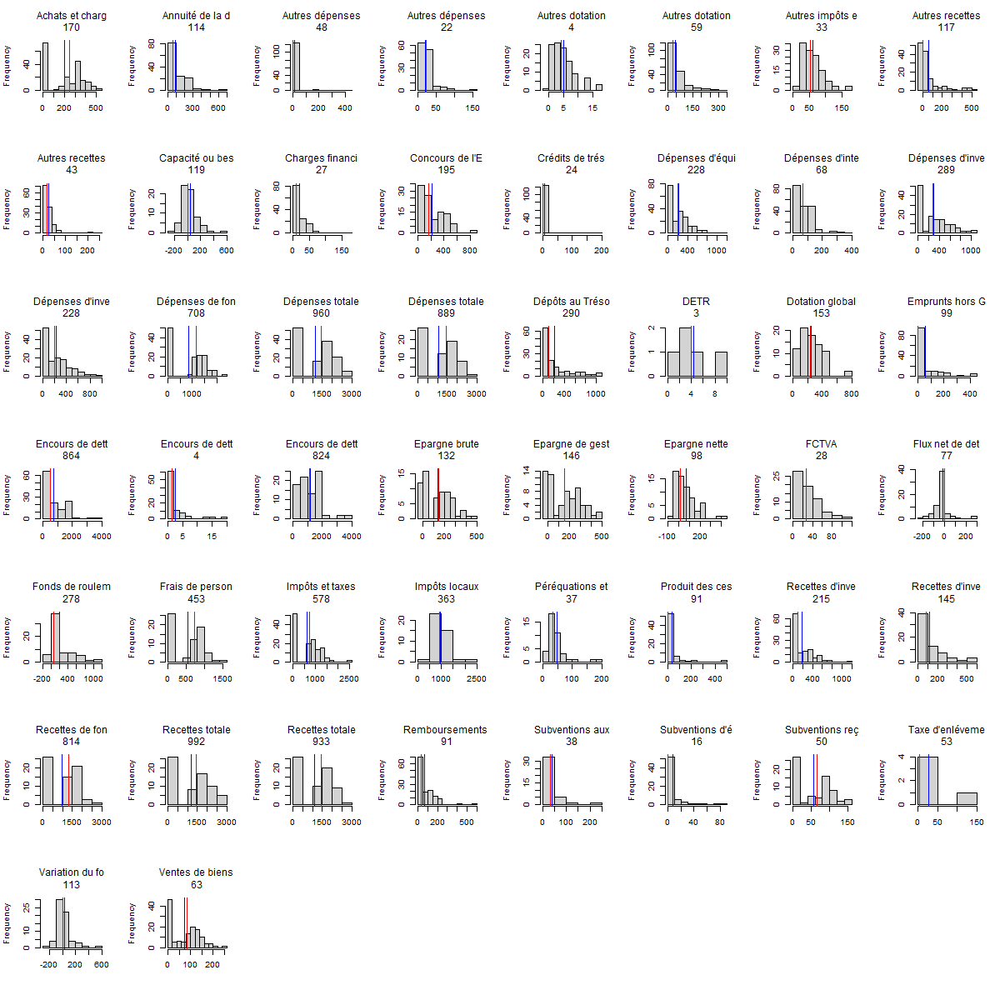
moyenne en bleue, médiane en rougeChercher un ou deux agrégats pour lequel médiane et moyenne sont différentes.
## [1] "Recettes totales hors emprunts"tmp <- data [data$agregat == agregat [43],]
hist(tmp$montant, main = agregat [43])
moy <- mean(tmp$montant)
med <- median(tmp$montant)
abline(v = moy, col = 'blue')
abline(v = med, col = 'red')
# également
agregat [37]## [1] "Péréquations et compensations fiscales"tmp <- data [data$agregat == agregat [37],]
hist(tmp$montant, main = agregat [37])
moy <- mean(tmp$montant)
med <- median(tmp$montant)
abline(v = moy, col = 'blue')
abline(v = med, col = 'red')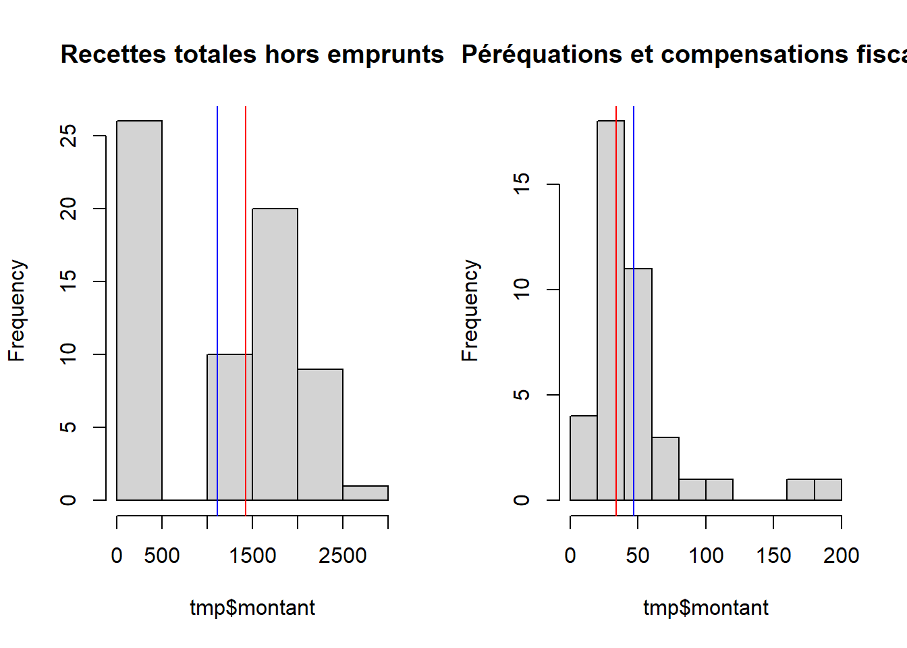
La distribution est-elle hétérogène ?
agg <- aggregate(data$montant, by = list(data$agregat), sd)
names(agg) <- c("agregat", "sigma")
hist(agg$sigma)
moy <- mean(agg$sigma)
med <- median(agg$sigma)
abline(v = moy, col = 'blue')
abline(v = med, col = 'red')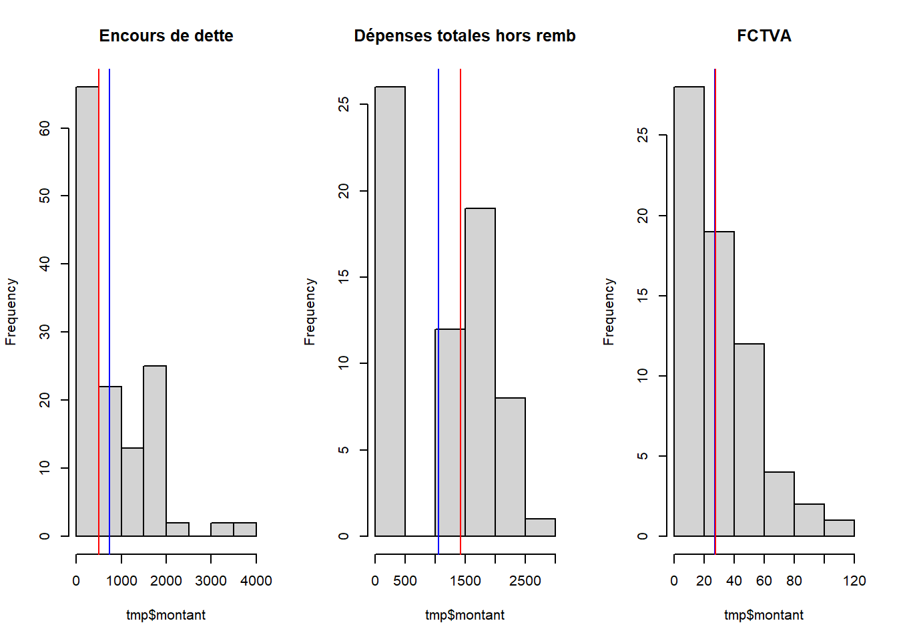
Commenter l’écart type le plus élevé
## [1] "Recettes totales"sel <- agregat [23]
tmp <- data [data$agregat == sel,]
hist(tmp$montant,
main = paste0
(sel,"\n",
round(sd(tmp$montant),0)))
moy <- mean(tmp$montant)
med <- median(tmp$montant)
abline(v = moy, col = 'blue')
abline(v = med, col = 'red')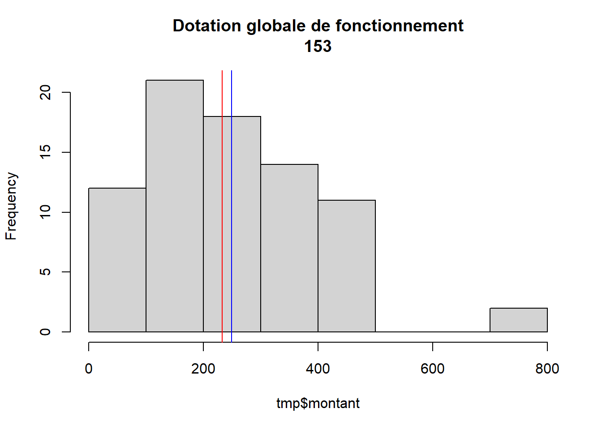
| ville | montant | |
|---|---|---|
| 3061 | TREMBLAY-EN-FRANCE | 11.53372 |
| 833 | TREMBLAY-EN-FRANCE | 11.99039 |
| 830 | SAINT-OUEN | 32.05609 |
| 3058 | SAINT-OUEN | 38.89933 |
| 806 | COUBRON | 76.44645 |
| 3034 | COUBRON | 79.35825 |
| 822 | PANTIN | 81.69524 |
| 3050 | PANTIN | 85.41640 |
| 812 | GOURNAY-SUR-MARNE | 89.24412 |
| 3040 | GOURNAY-SUR-MARNE | 91.52966 |
| 3032 | LE BOURGET | 96.82061 |
| 804 | LE BOURGET | 98.53689 |
| 820 | NOISY-LE-GRAND | 101.82457 |
| 823 | PAVILLONS-SOUS-BOIS (LES) | 102.85292 |
| 3048 | NOISY-LE-GRAND | 103.59962 |
| 3051 | PAVILLONS-SOUS-BOIS (LES) | 103.72646 |
| 814 | LILAS (LES) | 109.09528 |
| 3042 | LILAS (LES) | 110.73923 |
| 826 | RAINCY (LE ) | 119.43996 |
| 3054 | RAINCY (LE ) | 121.87906 |
| 3045 | MONTREUIL | 125.81036 |
| 817 | MONTREUIL | 126.14941 |
| 835 | VILLEPINTE | 133.07664 |
| 3063 | VILLEPINTE | 133.15476 |
| 3027 | AULNAY-SOUS-BOIS | 139.59424 |
| 828 | ROSNY-SOUS-BOIS | 141.94098 |
| 3056 | ROSNY-SOUS-BOIS | 142.62850 |
| 800 | BAGNOLET | 144.67744 |
| 3028 | BAGNOLET | 144.82501 |
| 799 | AULNAY-SOUS-BOIS | 145.42896 |
| 815 | LIVRY-GARGAN | 148.05929 |
| 3043 | LIVRY-GARGAN | 158.90039 |
| 827 | ROMAINVILLE | 197.15520 |
| 3055 | ROMAINVILLE | 212.29785 |
| 3057 | SAINT-DENIS | 216.31233 |
| 829 | SAINT-DENIS | 220.68925 |
| 818 | NEUILLY-PLAISANCE | 227.35747 |
| 3046 | NEUILLY-PLAISANCE | 231.84001 |
| 834 | VILLEMOMBLE | 232.23617 |
| 3062 | VILLEMOMBLE | 234.11953 |
| 3039 | GAGNY | 239.80515 |
| 811 | GAGNY | 240.08160 |
| 3029 | BLANC-MESNIL (LE ) | 269.77167 |
| 801 | BLANC-MESNIL (LE ) | 276.28277 |
| 3053 | PRE-SAINT-GERVAIS (LE ) | 280.67265 |
| 808 | DRANCY | 282.16551 |
| 825 | PRE-SAINT-GERVAIS (LE ) | 283.90719 |
| 3036 | DRANCY | 289.96530 |
| 813 | ILE-SAINT-DENIS (L’ ) | 295.68356 |
| 3041 | ILE-SAINT-DENIS (L’ ) | 295.99154 |
| 3026 | AUBERVILLIERS | 297.70783 |
| 798 | AUBERVILLIERS | 305.15876 |
| 3030 | BOBIGNY | 322.04049 |
| 3044 | MONTFERMEIL | 326.83808 |
| 3047 | NEUILLY-SUR-MARNE | 328.20699 |
| 802 | BOBIGNY | 328.32457 |
| 816 | MONTFERMEIL | 329.71248 |
| 819 | NEUILLY-SUR-MARNE | 334.32255 |
| 3052 | PIERREFITTE-SUR-SEINE | 347.95308 |
| 3035 | COURNEUVE (LA ) | 351.09408 |
| 824 | PIERREFITTE-SUR-SEINE | 359.80618 |
| 807 | COURNEUVE (LA ) | 361.61817 |
| 3049 | NOISY-LE-SEC | 383.07807 |
| 821 | NOISY-LE-SEC | 392.40800 |
| 3031 | BONDY | 393.69482 |
| 3037 | DUGNY | 404.60268 |
| 803 | BONDY | 407.91163 |
| 809 | DUGNY | 411.42082 |
| 3059 | SEVRAN | 451.09239 |
| 3038 | EPINAY-SUR-SEINE | 462.14358 |
| 831 | SEVRAN | 462.57997 |
| 836 | VILLETANEUSE | 469.20108 |
| 810 | EPINAY-SUR-SEINE | 477.96553 |
| 3064 | VILLETANEUSE | 478.09537 |
| 3060 | STAINS | 479.45783 |
| 832 | STAINS | 483.81569 |
| 3033 | CLICHY-SOUS-BOIS | 707.78330 |
| 805 | CLICHY-SOUS-BOIS | 736.10866 |
écart moyen des valeurs à leur moyenne arithmétique
moyenne du carré des écarts
et notamment, pour l’oeil du géographe :
Une façon de penser à cela est que l’écart-type est similaire à une “distance par rapport à la moyenne”.
Comparez cela à des distances dans un espace euclidien - ceci vous donne la vraie distance, où ce que vous avez suggéré (qui, en fait, est la déviation absolue ) ressemble plus à un calcul de distance manhattan .
Toujours sans passer par les formules, mais avec un tableau pas à pas, créer les indicateurs.
liste des colonnes :
écart à la moyenne
carré des écarts
et à part sur une seule case : moyenne du carré des écarts (variance), l’écart type est la racine carrée.
L’objectif de l’exercice était d’obtenir un commentaire clair avec quelques repères statistiques.
A ne pas séparer du fond bien sûr !
Il ne fallait pas tracer la médiane et la moyenne sur le tableur. Certains l’ont fait mais sous Excel voire autre ?
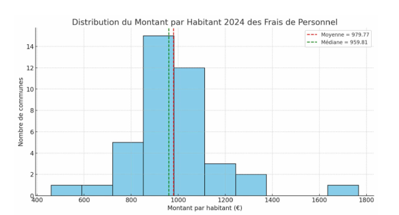
##### Aspect généralUn simple titre au graphique peut suffire
de type : chiffres / description / analyse
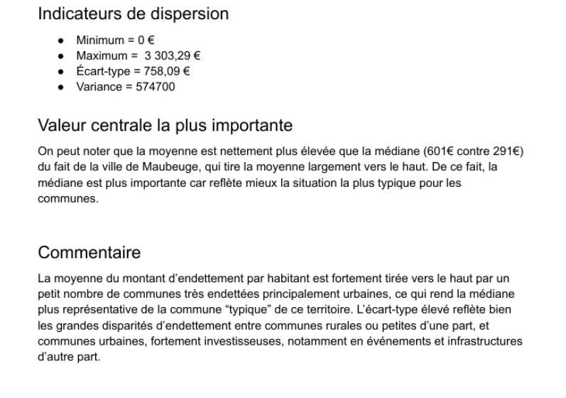
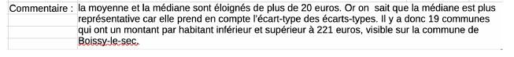
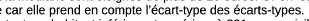
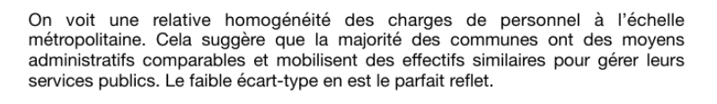
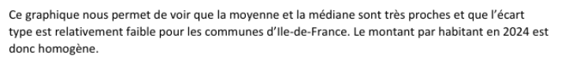
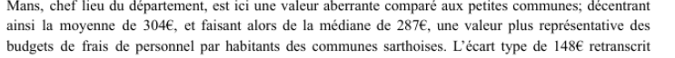
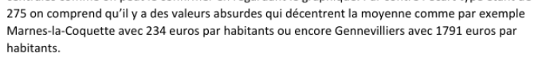
… Un peu mieux, mais Marnes-la-Coquette sous-analysé.
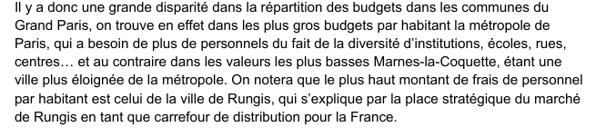
Autrement dit l’analyse, ce n’est pas que des chiffres !
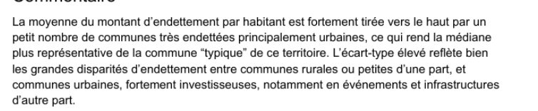
Bien définir son agrégat peut suffire
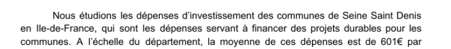
L5GEABIM Analyses bivariées et multivariées